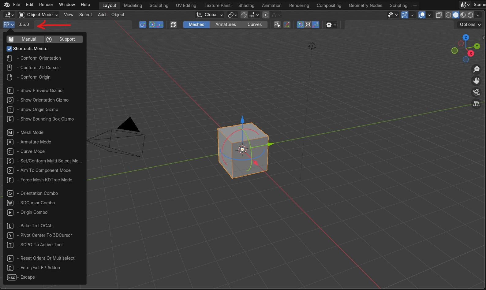

Pressing 'D' key invokes Friendly Pivot addon. While this tool is active there
is an ability to navigate through viewport, switch actions, change Pivot Orientation,
set 3D Cursor and Origin. This key works in two ways. First way: tool is active
while pressing and holding the key. Releasing it stops the tool. The second way is
just a simple press-release key that invokes the tool. Subsequent pressing stops it.
This gives some flexibility of the addon usage.
Also there is a shortcuts memo in the tool help menu for convenience.

All shortcuts are changeable in the addon preference window.
Conforms
LMB - To set Transform Orientation.
MMB - To set 3D Cursor.
RMB - To set Origin.
Gizmos
P - Activate highlighted component normal's Preview gizmo.
O - Switch On/Off Orientation handle for Pivot gizmo.
I - Switch On/Off Transform handle for Pivot gizmo.
B - Activate Bounding Box gizmo.
Modes
M - Select Mesh type only object filter mode.
A - Select Armature type object filter mode.
C - Select Curve type object filter mode.
S - Set/Conform components Multiselection additional mode.
X - Set Aim to component additional mode.
F - Set Mesh Force mode for mesh type objects without faces(In development).